《世界征服》（World Conquest）是一款原創回合制等距菱形格 4X 小遊戲， 以 Godot 4 製作。玩法靈感來自經典的戰略征服類遊戲：探索群島、佔領城市、生產陸海空軍， 並在戰爭迷霧下與電腦對手爭奪世界。
畫面採用 1990 年代等距策略遊戲常見的菱形格與像素感調色（草地綠、海洋藍、有序抖色）， 全部美術以程式生成，並非 Civilization II 或 Strategic Conquest 的複刻或素材重製。
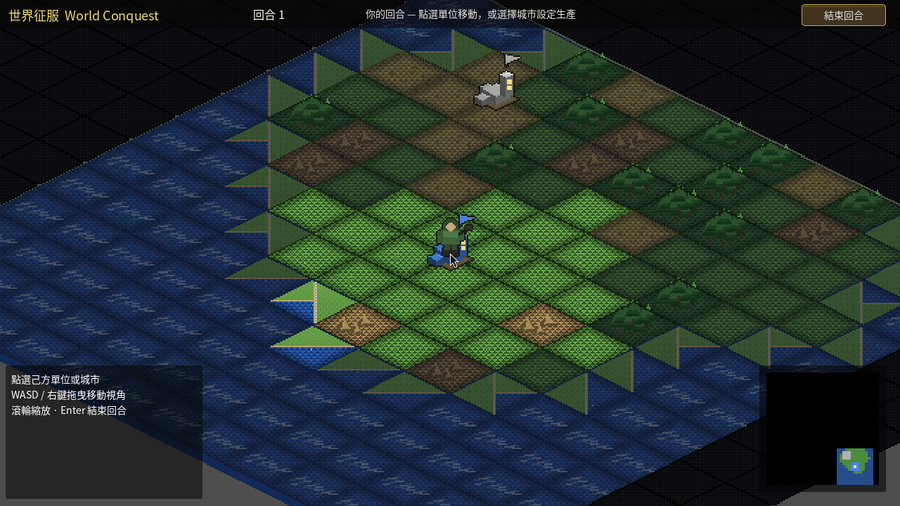
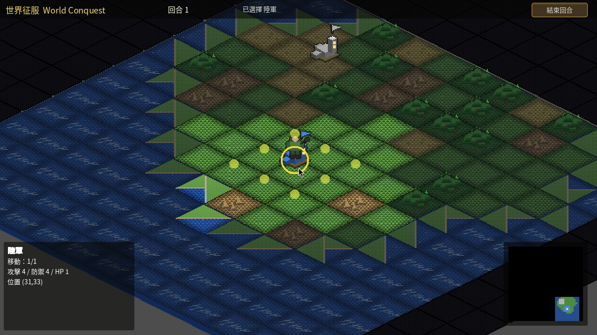
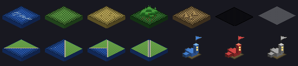
專案路徑：
/workspace/agents/Game Designer/world-conquest
在終端機執行：
cd "/workspace/agents/Game Designer/world-conquest" /home/box/bin/godot --path .
也可從 我的電腦（Grok Bot 側欄 Computer）開啟已在跑的 Godot 視窗。
/home/box/bin/godot --headless --path . --script res://scripts/smoke_test.gd
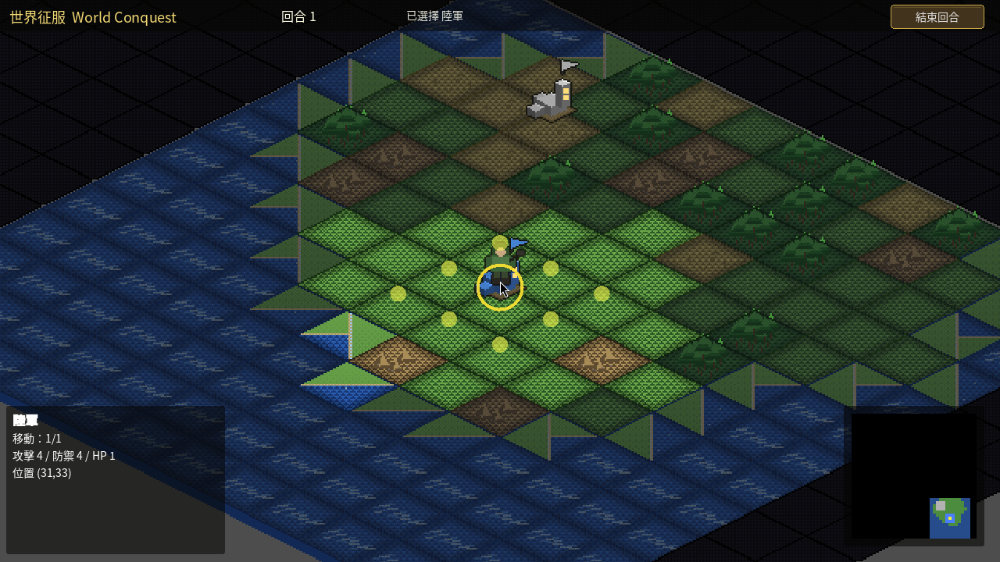
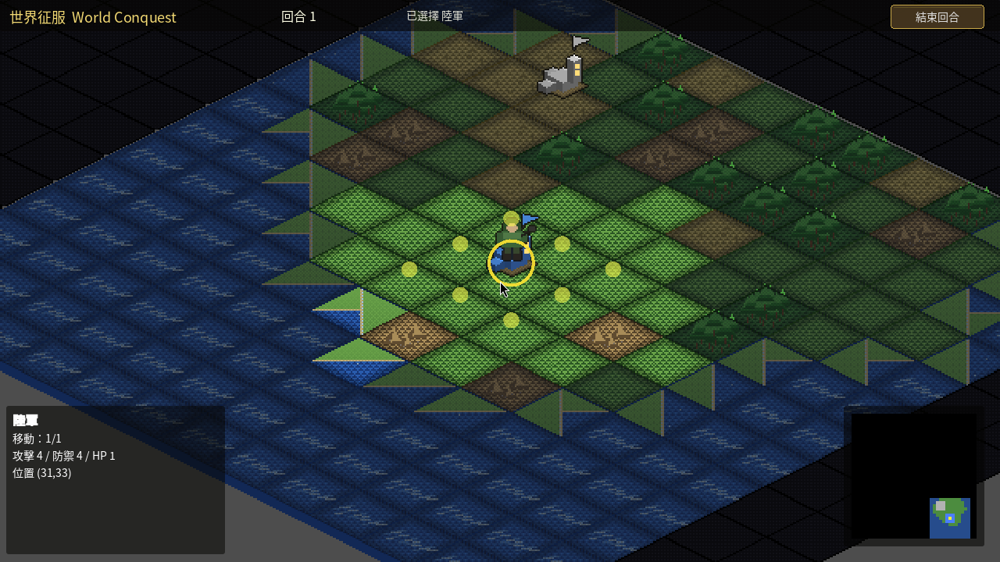
開局各方通常 1 城＋1 陸軍；若起始城為港口則額外 1 戰鬥機。對手為一台簡易擴張型 AI。
| 圖示 | 單位 | 類型 | 成本 | 移動 | 備註 |
|---|---|---|---|---|---|
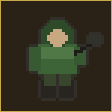 |
陸軍 | 陸 | 5 | 1 | 唯一可佔領城市；可上運輸艦 |
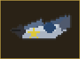 |
戰鬥機 | 空 | 6 | 20 燃油 | 視野 2；需補油否則墜毀 |
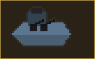 |
驅逐艦 | 海 | 8 | 4 | 可發現／克制潛艦；可岸轟 |
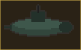 |
潛艦 | 海 | 10 | 3 | 非鄰接驅逐則隱形；剋戰艦 |
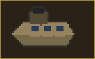 |
運輸艦 | 海 | 12 | 3 | 無武裝；載 4 陸軍 |
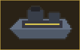 |
航空母艦 | 海 | 15 | 3 | 載 4 戰機並補油 |
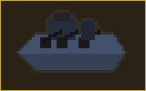 |
戰艦 | 海 | 20 | 2 | 高生命；可岸轟 |
佔領對方所有城市即獲勝。防守己方城市、用運輸艦兩棲登陸、以及用戰機偵察戰霧中的敵城，是常見途徑。
tools/gen_art.py／tools/gen_banner.py 生成，可重現。
海報 Banner 檔案：assets/promo/banner_16x9.png（1920×1080）
本說明：docs/guide.html（可雙擊或用瀏覽器以 file:// 開啟）